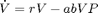
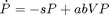

Aplikacja Ryby
Program rozwiązuje równanie Lotki-Volterry, które wykorzystaliśmy do symulacji dwóch populacji ryb, jednej drapieżnej P i drugiej ofiar V.
Równanie opisujące system:


Contents
function varargout = GUI(varargin) % GUI MATLAB code for GUI.fig % GUI, by itself, creates a new GUI or raises the existing % singleton*. % % H = GUI returns the handle to a new GUI or the handle to % the existing singleton*. % % GUI('CALLBACK',hObject,eventData,handles,...) calls the local % function named CALLBACK in GUI.M with the given input arguments. % % GUI('Property','Value',...) creates a new GUI or raises the % existing singleton*. Starting from the left, property value pairs are % applied to the GUI before GUI_OpeningFcn gets called. An % unrecognized property name or invalid value makes property application % stop. All inputs are passed to GUI_OpeningFcn via varargin. % % *See GUI Options on GUIDE's Tools menu. Choose "GUI allows only one % instance to run (singleton)". % % See also: GUIDE, GUIDATA, GUIHANDLES % Edit the above text to modify the response to help GUI % Last Modified by GUIDE v2.5 22-Nov-2014 12:57:45 % Begin initialization code - DO NOT EDIT gui_Singleton = 1; gui_State = struct('gui_Name', mfilename, ... 'gui_Singleton', gui_Singleton, ... 'gui_OpeningFcn', @GUI_OpeningFcn, ... 'gui_OutputFcn', @GUI_OutputFcn, ... 'gui_LayoutFcn', [] , ... 'gui_Callback', []); if nargin && ischar(varargin{1}) gui_State.gui_Callback = str2func(varargin{1}); end if nargout [varargout{1:nargout}] = gui_mainfcn(gui_State, varargin{:}); else gui_mainfcn(gui_State, varargin{:}); end % End initialization code - DO NOT EDIT % --- Executes just before GUI is made visible. function GUI_OpeningFcn(hObject, eventdata, handles, varargin)
% This function has no output args, see OutputFcn. % hObject handle to figure % eventdata reserved - to be defined in a future version of MATLAB % handles structure with handles and user data (see GUIDATA) % varargin command line arguments to GUI (see VARARGIN)
Deklaracje
Tu należy umieścić nowe pola struktury handles Wartości do zadeklarowanych pól są przypisywane przy tworzeniu sliderów. a,b,... oznaczają wartości parametrów i powinny wyświetlać te same wartości co slidery da,db,... to niepewności, bądź zaburzenia x0 warunki początkowe
handles.a; handles.b; handles.r; handles.s; % Uwaga warunek początkowy jest tworzony w funkcjach kreujących slidery, % i dostajemy go w postaci wektora wierszowego, trzeba transponować. handles.x0=handles.x0'; delta=4 handles.da=delta; handles.db=delta; handles.dr=delta; handles.ds=delta; handles.dx0=[delta;delta];
delta =
4
Choose default command line output for GUI
handles.output = hObject; % Update handles structure guidata(hObject, handles); % UIWAIT makes GUI wait for user response (see UIRESUME) % uiwait(handles.figure1); % --- Outputs from this function are returned to the command line.
function varargout = GUI_OutputFcn(hObject, eventdata, handles) % varargout cell array for returning output args (see VARARGOUT); % hObject handle to figure % eventdata reserved - to be defined in a future version of MATLAB % handles structure with handles and user data (see GUIDATA) % Get default command line output from handles structure varargout{1} = handles.output; % --- Executes on slider movement. function sliderA_Callback(hObject, eventdata, handles) % hObject handle to sliderA (see GCBO) % eventdata reserved - to be defined in a future version of MATLAB % handles structure with handles and user data (see GUIDATA) % Hints: get(hObject,'Value') returns position of slider % get(hObject,'Min') and get(hObject,'Max') to determine range of slider handles.a=get(hObject,'Value'); guidata(hObject,handles); % --- Executes during object creation, after setting all properties. function sliderA_CreateFcn(hObject, eventdata, handles) % hObject handle to sliderA (see GCBO) % eventdata reserved - to be defined in a future version of MATLAB % handles empty - handles not created until after all CreateFcns called % Hint: slider controls usually have a light gray background. if isequal(get(hObject,'BackgroundColor'), get(0,'defaultUicontrolBackgroundColor')) set(hObject,'BackgroundColor',[.9 .9 .9]); end handles.a=get(hObject,'Value') guidata(hObject,handles); % --- Executes on slider movement. function sliderB_Callback(hObject, eventdata, handles) % hObject handle to sliderB (see GCBO) % eventdata reserved - to be defined in a future version of MATLAB % handles structure with handles and user data (see GUIDATA) % Hints: get(hObject,'Value') returns position of slider % get(hObject,'Min') and get(hObject,'Max') to determine range of slider handles.b=get(hObject,'Value'); guidata(hObject,handles); % --- Executes during object creation, after setting all properties. function sliderB_CreateFcn(hObject, eventdata, handles) % hObject handle to sliderB (see GCBO) % eventdata reserved - to be defined in a future version of MATLAB % handles empty - handles not created until after all CreateFcns called % Hint: slider controls usually have a light gray background. if isequal(get(hObject,'BackgroundColor'), get(0,'defaultUicontrolBackgroundColor')) set(hObject,'BackgroundColor',[.9 .9 .9]); end handles.b=get(hObject,'Value'); guidata(hObject,handles); % --- Executes on slider movement. function sliderS_Callback(hObject, eventdata, handles) % hObject handle to sliderS (see GCBO) % eventdata reserved - to be defined in a future version of MATLAB % handles structure with handles and user data (see GUIDATA) % Hints: get(hObject,'Value') returns position of slider % get(hObject,'Min') and get(hObject,'Max') to determine range of slider handles.s=get(hObject,'Value'); guidata(hObject,handles); % --- Executes during object creation, after setting all properties. function sliderS_CreateFcn(hObject, eventdata, handles) % hObject handle to sliderS (see GCBO) % eventdata reserved - to be defined in a future version of MATLAB % handles empty - handles not created until after all CreateFcns called % Hint: slider controls usually have a light gray background. if isequal(get(hObject,'BackgroundColor'), get(0,'defaultUicontrolBackgroundColor')) set(hObject,'BackgroundColor',[.9 .9 .9]); end handles.s=get(hObject,'Value'); guidata(hObject,handles); % --- Executes on slider movement. function sliderR_Callback(hObject, eventdata, handles) % hObject handle to sliderR (see GCBO) % eventdata reserved - to be defined in a future version of MATLAB % handles structure with handles and user data (see GUIDATA) % Hints: get(hObject,'Value') returns position of slider % get(hObject,'Min') and get(hObject,'Max') to determine range of slider handles.r=get(hObject,'Value'); guidata(hObject,handles); % --- Executes during object creation, after setting all properties. function sliderR_CreateFcn(hObject, eventdata, handles) % hObject handle to sliderR (see GCBO) % eventdata reserved - to be defined in a future version of MATLAB % handles empty - handles not created until after all CreateFcns called % Hint: slider controls usually have a light gray background. if isequal(get(hObject,'BackgroundColor'), get(0,'defaultUicontrolBackgroundColor')) set(hObject,'BackgroundColor',[.9 .9 .9]); end handles.r=get(hObject,'Value'); guidata(hObject,handles); % --- Executes on slider movement. function sliderV_Callback(hObject, eventdata, handles) % hObject handle to sliderV (see GCBO) % eventdata reserved - to be defined in a future version of MATLAB % handles structure with handles and user data (see GUIDATA) % Hints: get(hObject,'Value') returns position of slider % get(hObject,'Min') and get(hObject,'Max') to determine range of slider handles.x0(1)=get(hObject,'Value'); guidata(hObject,handles); % --- Executes during object creation, after setting all properties. function sliderV_CreateFcn(hObject, eventdata, handles) % hObject handle to sliderV (see GCBO) % eventdata reserved - to be defined in a future version of MATLAB % handles empty - handles not created until after all CreateFcns called % Hint: slider controls usually have a light gray background. if isequal(get(hObject,'BackgroundColor'), get(0,'defaultUicontrolBackgroundColor')) set(hObject,'BackgroundColor',[.9 .9 .9]); end handles.x0(1)=get(hObject,'Value'); guidata(hObject,handles); % --- Executes on button press in pushbutton1. function pushbutton1_Callback(hObject, eventdata, handles)
% hObject handle to pushbutton1 (see GCBO) % eventdata reserved - to be defined in a future version of MATLAB % handles structure with handles and user data (see GUIDATA)
Symulacja
Przycisk powoduje wykonanie obliczeń i aktualizowanie wykresów. PROBLEM: Czasami przy pewnych wartościach parametrów solver się zacina, tzn. albo się zawiesza, ale gdy przeprowadzi się symulację jeszcze raz wszystko wraca do normy, albo wyskakuje błąd w konsolce, że ode45 nie udało się dojść do wyniku ze względu na zły (zbyt duży) krok? Albo coś w tym stylu
tspan=linspace(0,1,100); %czas a=handles.a; b=handles.b; s=handles.s; r=handles.r; x0=handles.x0; % powyżej przepisuję dane % liczę wynik dla danych niezabużonych [T1,Y1]=rozwiaz_z_parametrami(r,a,s,b,tspan,x0) % tworzę tablicę na poszczególne parametry, tak żeby można je było % wyświetlić w "bar" Tablica_parametrow=[a; b; s; r;handles.x0]; da=handles.da; db=handles.db; ds=handles.ds; dr=handles.dr; a=losuj_parametr(a,da); b=losuj_parametr(b,db); s=losuj_parametr(s,ds); r=losuj_parametr(r,dr); x0(1)=losuj_parametr(handles.x0(1),handles.dx0(1)); x0(2)=losuj_parametr(handles.x0(2),handles.dx0(2)); % Dołączam do tablicy parametry zperturbowane Tablica_parametrow=[Tablica_parametrow [a; b; s; r;x0(1);x0(2)]] % Wynik dla danych zperturbowanych [T,Y]=rozwiaz_z_parametrami(r,a,s,b,tspan,x0); plot(handles.axes1,T,[Y,Y1]); legend(handles.axes1,'V1','P1','Vconst','Pconst'); guidata(hObject,handles); bar(handles.axes2,Tablica_parametrow); somenames={'a','b','s','r','V','P'} set(handles.axes2,'xticklabel',somenames); % disp służy jako sprawdzenie czy program się nie zaciął, a zdaża mu się. disp('Gotowe');
--- Executes during object creation, after setting all properties.
function sliderP_CreateFcn(hObject, eventdata, handles) % hObject handle to sliderP (see GCBO) % eventdata reserved - to be defined in a future version of MATLAB % handles empty - handles not created until after all CreateFcns called % Hint: slider controls usually have a light gray background. if isequal(get(hObject,'BackgroundColor'), get(0,'defaultUicontrolBackgroundColor')) set(hObject,'BackgroundColor',[.9 .9 .9]); end handles.x0(2)=get(hObject,'Value'); guidata(hObject,handles); % --- Executes on slider movement. function sliderP_Callback(hObject, eventdata, handles) % hObject handle to sliderP (see GCBO) % eventdata reserved - to be defined in a future version of MATLAB % handles structure with handles and user data (see GUIDATA) % Hints: get(hObject,'Value') returns position of slider % get(hObject,'Min') and get(hObject,'Max') to determine range of slider handles.x0(2)=get(hObject,'Value'); guidata(hObject,handles);